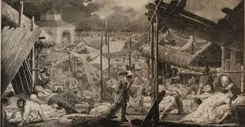

Cos'è il Covid-19?
Covid-19 è il nome di una malattia da nuovo coronavirus. È un virus respiratorio che appartiene alla grande famiglia dei coronavirus. Il nome deriva dalla presenza di punte a forma di corona sulla superficie del virus.
Ha fatto la sua comparsa nella fine del 2019 da cui deriva anche il nome Covid-19, dove:
- "Co" sta per corona
- "Vi" per virus
- "D" sta per diease ( malattia in inglese)
- 19 proprio per l'anno della comparsa.

Cos'è la peste?
La peste bubbonica è la forma di peste più comune e si manifesta in seguito alla puntura di pulci infette o per contatto diretto tra materiale infetto e lesioni della pelle.
L'epidemia più conosciuta è quella del 1630 diffusasi in Italia e nota anche come "peste manzoniana" perchè descritta ampiamente nel romanzo " I promessi sposi".
Analogie tra Covid-19 e peste
Paziente zero Covid
Nel caso della pandemia di Covid-19 è molto complicato risalire al paziente zero. Il motivo è semplice: non abbiamo ancora alcuna certezza sul luogo e sulla data di origine dell’infezione. Il paziente zero non ha ancora un’identità, anche se, in base all’ipotesi avanzata dall’infettivologo Massimo Galli, tutto potrebbe essere partito da un soldato tedesco.
Paziente zero peste
La calata dei Lanzichenecchi nel 1628 fu portatrice della peste di cui parla anche il Manzoni ne « I Promessi Sposi». Quando i Lanzichenecchi, dopo aver combattuto contro il Ducato di Mantova, ripresero la via del Tirolo, la gente tirò un sospiro di sollievo: nessuno pensava che si fossero lasciati dietro i germi del morbo terribile della peste, che in breve scoppiò, a segnare nella storia della Lombardia una delle epoche più dolorose.

Facilità di contagio

Il Covid è una malattia che si diffonde molto rapidamente. Per infettarsi basta venire a contatto con un positivo oppure con superfici contaminate.
Molto simile il contagio per quanto riguarda la peste: oltre alla puntura delle pulci o ratti infetti, si può contrarre la mlattia semplicemente toccando superfici portatrici del batterio.
"Aveva bensì avuto cura di non toccar mai i monatti... ma, in quell'ultima furia del frugare aveva poi presi i panni del padrone"
(cap XXXIII)
Sottostimazione della pandemia
“Ma sul finire del mese di marzo, cominciarono, prima nel borgo di porta orientale, poi in ogni quartiere della città, a farsi frequenti le malattie, le morti,..."
"I magistrati, come chi si risente da un profondo sonno, principiarono a dare un po’ più orecchio agli avvisi, alle proposte della Sanità, a far eseguire i suoi editti, i sequestri ordinati, le quarantene prescritte da quel tribunale." (cap XXXI)
La stessa cosa è accaduta con il Covid perchè, inizialmente, si pensava fosse solo un'influenza ma si è rivelata una malattia molto pericolosa e tutt'oggi siamo ancora impegnati a combatterla.

Reparti covid negli ospedali
In seguito all'esplosione dei contagi dovuti al Coronavirus, tutti gli ospedali si sono dotati di reparti specializzati per la lotta contro questa malattia e per far lavorare i medici in totale sicurezza.
Inoltre alcuni ospedali si sono dedicati esclusivamente aella cura del Covid e alla ricerca ; ne è un esempio lo Spallanzani di Roma.
Dopo un'iniziale difficoltà degli ospedali che non riuscivano più a sostenere certi ritmi, attualmente la situazione è migliorata e i reparti di terapia intensiva accolgono sempre meno pazienti.
Lazzaretto
Il lazzaretto era un luogo, posto esternamente alle mura di Milano, vicino a Porta Orientale, destinato al ricovero degli appestati durante l'epidemia di peste e presentato da Manzoni nel capitolo XI. Il nome "lazzaretto" è collegato al lebbroso Lazzaro della parabola evangelica del ricco epulone (Luca, XVI, 19-31).Anche se il termine propriamente deriva dalla storpiatura del nome dell'isola veneziana di S. Maria di Nazareth, che veniva detta Nazarethum ed era destinata al ricovero di malati contagiosi provenienti dalla Terrasanta (Manzoni usa nel romanzo la forma lazzeretto, in uso nell'italiano dell'epoca)
Assalto ai forni / supermercati
Un'altra cosa molto simile è il bisogno di approvigionamento.
Durante la peste, la popolazione prese di mira i forni per reperire il pane ( assalto al forno delle Grucce cap XII ). Il cibo iniziava a scarseggiare e per le famiglie iniziò un periodo di carestia che le portava anche a procurarsi cibo rubandolo.
In seguito al lockdown indetto per contrastare il Covid, la maggior parte dei supermercati italiani si ritrovò ad essere presa d'assalto. Scaffali svuotati, lunghe file all'esterno e, a volte, persino delle risse. Ne è un esempio la "lotta" per il lievito.
Altre analogie...
Altra analogia tra le peste e il Coronavirus fu l’incredulità e lo sbigottimento dei medici di fronte ad una patologia talmente nuova e sconosciuta. Disorientati, i medici di allora come quelli di oggi, dovettero andare a tentativi per individuare la cura più efficace per ridurre i contagi e la mortalità. Un altro punto in comune che dimostra come 400 anni di storia non siano altro che un giro di lancette, è la presenza di odio razziale. Se pochi mesi fa molti individui si sfogavano insultando il popolo cinese, indicato come untore, nel 1630 la situazione era la stessa, con la differenza che il capro espiatorio erano gli ebrei, i diversi per eccellenza.
Alcuni tra gli episodi più toccanti...
La morte di Cecilia
Durante il capitolo XXXIV, Manzoni presenta un nuovo personaggio: la madre di Cecilia. Questo episodio è certamente il più commovente del romanzo.Questa donna tiene in braccio sua figlia ormai morta ma vestita con abiti eleganti come se stesse andando ad un festa. Quando il monatto si avvicina per prendere la bambina, la madre si rifiuta di dargliela perchè vuole adagiarla lei stessa. Questa scena commuove anche il monatto che , nonostante fosse abituato a queste scene, rimane in un silenzio rispettoso. Inoltre avvisa il monatto di ripassare la sera perchè dovrà prendere anche lei e l'altra figlia.
Il trasporto dei morti
Un’immagine da teatro di guerra: nel centro di Bergamo. Una lunga colonna di mezzi militari ferma in via Borgo Palazzo – a poche centinaia di metri dal cimitero. Sono i furgoni dell’esercito impiegati per trasportare le bare dal camposanto bergamasco verso i forni crematori di altre Regioni. Il motivo, come è ormai noto, è che la camera mortuaria a Bergamo non è più in grado, da giorni, di accogliere i feretri delle vittime del coronavirus. E lo stesso discorso vale per il forno crematorio (ce n’è uno solo in città, è attivo 24 ore su 24)